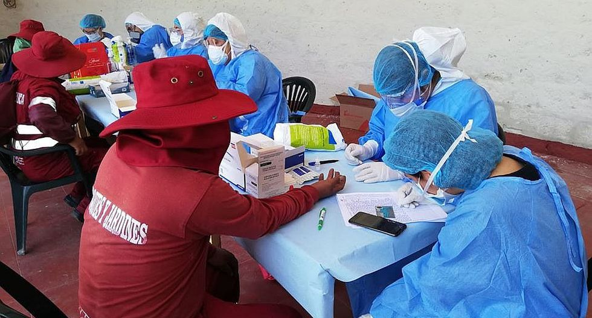
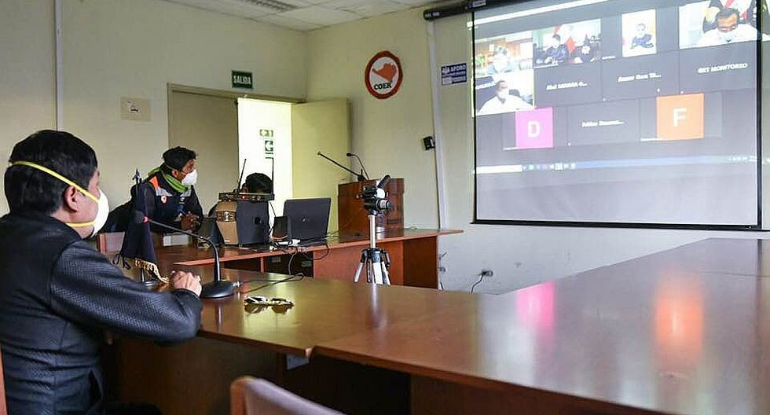
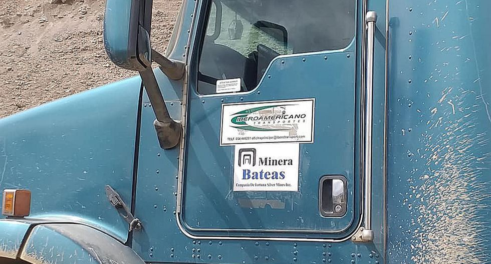
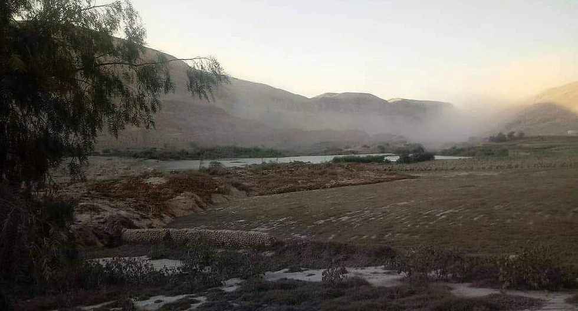
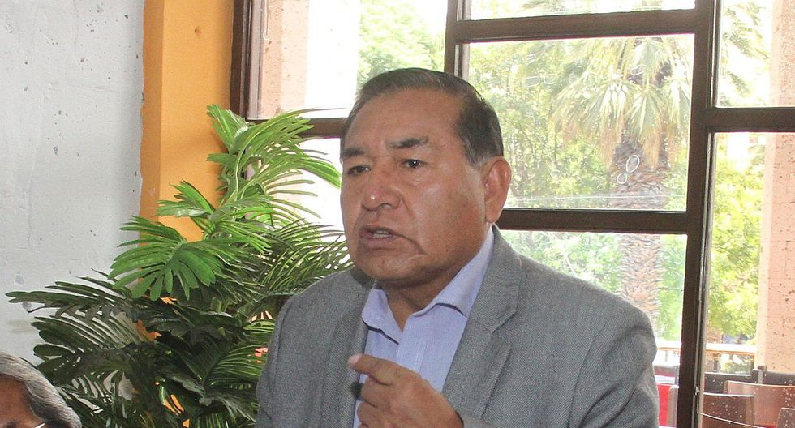

BLOG 01
Más de 400 trabajadores de Limpieza Pública de la Municipalidad Provincial de Arequipa (MPA) pasaron por pruebas rápidas para descartar contagios de coronavirus. Se trata de una acción preventiva, toda vez que los empleados se hallan expuestos a riesgos sanitarios por las labores que desarrollan.
La evaluación se realizó al interior del desocupado Parque Selva Alegre, donde personal de EsSalud acudió para los chequeos respectivos.
El alcalde Omar Candia aseguró que para velar por el bienestar de los trabajadores se realizarán estas pruebas de forma periódica. .

Mediante videoconferencia los gobernadores de la Mancomunidad Macro Región Sur coordinan el retorno de población varada en los departamentos de Puno, Tacna, Cusco, Moquegua, Arequipa y Madre de Dios.
Se propone la aplicación de pruebas rápidas antes de la salida de los viajeros para evitar la propagación del coronavirus en sus destinos. También se indicó que quienes partan, deben acatar la cuarentena de 14 días días obligatorios, antes de participar en su comunidad.
“En las circunstancias en la que nos encontramos, el sur no puede cerrar las puertas a sus hermanos, ni dejar que muchos intenten llegar a sus regiones caminando", manifestó el gobernador regional de Arequipa, Elmer Cáceres Llica.

El Frente de Defensa distrito Caylloma (FUDICAY) acusó a las empresas Minera Bateas S.A.C; Brexia, Maxpala, Buenaventura y Tambomayo de incumplir las ordenes de aislamiento social arriesgando a la población local debido a que ya hay casos de coronavirus en las operaciones extractivas.
En un comunicado, el Frente señaló que el representante de Relaciones Comunitarias de la empresa confirmó los casos. Los pobladores acusaron a la minera que el 14 de abril unos 180 trabajadores arribaron a la labor para el cambio de personal.
Piden mayores controles a las autoridades para evitar la propagación del patógeno entre la población.

Un cerro en el distrito arequipeño de San Juan de Siguas se derrumbó arrastrando escombro y piedras a lo largo de 250 metros y obstruyendo el cauce del río Siguas; que se rebalsó afectando viviendas, y cultivos de alfalfa, arboles frutales y cría de cochinilla.
El accidente ocurrió ayer en el sector fundo Santana; y hoy la Autoridad Autónoma de Majes (AUTODEMA) y el Centro de Operaciones de Emergencia Regional (COER) trasladaron tres tractores oruga y dos excavadoras para liberar la corriente.
Al lugar acudieron representantes de ambas instituciones para corroborar los daños y donde se comprometieron a entregar ayuda humanitaria a los agricultores afectados.

El exdirector de la UGEL Norte, Jorge Luis Choque, informó que retomará sus funciones el próximo 4 de mayo, luego de haber cumplido dos meses de suspensión sin goce de haber, al ser investigado por el Programa de Asesoramiento Pedagógico Institucional (PAPI) durante el 2018 y 2019.
Dicha indagación estuvo a cargo de una Comisión Especial de la Gerencia de Educación, cuyos miembros solo determinaron dicha sanción que se cumple oficialmente el sábado 02 de mayo, pero Choque acudirá a laborar el lunes 04 de mayo.
Choque ganó el cargo de director de la UGEL mediante concurso público en agosto del 2016 y culmina el 31 de julio del presente año.Cumplió sanción y señaló que apeló porque las quejas sobre supuestos delitos que hicieron en su contra no se comprobaron.
"Yo tengo las manos limpias y la historia va demostrar porque el tiempo finalmente es el aliado, tengo la convicción de que las cosas fueron correctas", enfatizó.
